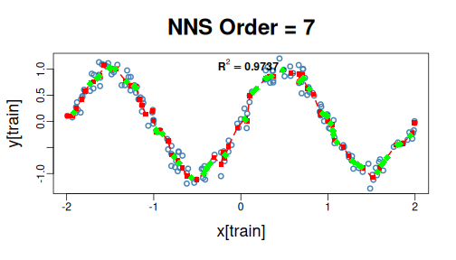
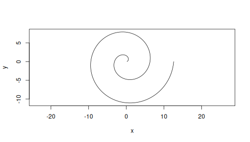

This is revised material accompanying twelve historical PDFs, not their original editable source. See example corrections for the source inventory and withdrawn claims. Each section states its statistical target; illustrative outputs are recomputed from the installed NNS version.
Companion to Bayes' Theorem From Partial Moments. Degree-zero co-partial moments count quadrant events. Positive-degree moments describe directional magnitude.
x <- c(-1, -1, -1, 1)
y <- -x
target <- 0
p_y_above_given_x_below <- D.UPM(0, 0, x, y, target, target) / LPM(0, target, x)
c(partial_moment = p_y_above_given_x_below,
direct_count = mean(y[x <= target] > target))
## partial_moment direct_count
## 1 1The conditioning event must have positive mass. A ratio of degree-one joint and marginal areas is a different directional quantity, not this event probability.
Companion to Continuous CDFs and ANOVA with NNS. The normalized degree-one curve has its exact mean anchor and defines an induced univariate law; it is not the original frequency CDF. Neither interval width nor frequency coverage has a universal ordering across these targets.
x <- c(rep(-100, 10), rep(0, 980), rep(100, 10))
bands <- rbind(
frequency_type7 = c(LPM.VaR(.025, 0, x), UPM.VaR(.025, 0, x)),
directional_area = c(LPM.VaR(.025, 1, x), UPM.VaR(.025, 1, x))
)
data.frame(bands, sample_fraction = apply(bands, 1,
function(b) mean(x >= b[1] & x <= b[2])))
## X2.5. X97.5. sample_fraction
## frequency_type7 0.00000 0.00000 0.98
## directional_area -27.53623 27.53623 0.98ANOVA mean, median, and distribution-profile modes retain distinct targets. Certainty summarizes agreement for the selected target; inferential calibration is a separate question.
Companion to Nonlinear Correlation and Dependence Using NNS. Nonlinear dependence can be strong while linear correlation is zero. Finite partition resolution affects the NNS statistic and does not prove causal identification.
x <- seq(-2, 2, length.out = 201)
y <- x^2
c(Pearson = cor(x, y), NNS_dependence = NNS.dep(x, y)$Dependence)
## Pearson NNS_dependence
## 6.832295e-17 9.649646e-01Permutation quantiles are null reference intervals under exchangeability, not population-dependence confidence intervals. Serial and clustered sampling need an appropriate null and resampling design.
Page 9 of Nonlinear Correlation and Dependence Using NNS
prints 0.09571785 for the following seeded example. That
historical value is stale; the current implementation returns
approximately 0.19784524. The executable chunk below
recomputes the result from the installed version rather than carrying
the PDF's output forward.
set.seed(123)
x <- rnorm(1000)
y <- rnorm(1000)
z <- rnorm(1000)
NNS.copula(cbind(x, y, z), plot = FALSE)
## [1] 0.1978452The three simulated variables are independent by construction. A nonzero finite-sample score does not contradict that construction, and it is not a p-value. The PDF's population reference of \(2(1/2)^3=1/4\) concerns the combined all-below and all-above event mass for independent continuous variables at their marginal medians. It is not the expected degree-one copula score or a universal independence threshold. Mean benchmarks have this median property for the symmetric normal populations here, not for every distribution.
Companion to Normalization. Multiplication by positive constants preserves Pearson correlation. Negative factors reverse the sign. A change of portfolio weights is a separate operation from rescaling data columns.
x <- 1:10
y <- x + c(0, 1, 0, -1, 0, 1, 0, -1, 0, 1)
c(original = cor(x, y), positive_scaling = cor(3*x, 7*y),
one_negative_factor = cor(3*x, -7*y))
## original positive_scaling one_negative_factor
## 0.9719076 0.9719076 -0.9719076Check NNS normalization factors and their intended target before interpreting transformed relationships; positivity of all sample means is not automatic.
Companion to 5 way rank probabilities using R. The two summaries below answer different questions about the same five-column panel.
set.seed(17)
performance <- matrix(rnorm(1000), ncol = 5)
performance[, 5] <- 3 * performance[, 5]
severity <- apply(performance, 2, function(z) UPM(1, 0, z))
severity_share <- severity / sum(severity)
winner <- max.col(performance, ties.method = "first")
win_frequency <- tabulate(winner, nbins = 5) / nrow(performance)
data.frame(severity_share, win_frequency)
## severity_share win_frequency
## 1 0.1429036 0.130
## 2 0.1421865 0.170
## 3 0.1472827 0.140
## 4 0.1419384 0.155
## 5 0.4256888 0.405Winner frequencies require jointly observed or jointly generated
races and an explicit tie policy. Sampling class labels with
prob = severity_share confirms only that sampler's input
weights.
Companion to Partitional Estimation Using Partial Moments. A mean-zero noise term makes the known nonlinear function the conditional mean. All comparisons use the same held-out rows and loss.
set.seed(18)
x <- runif(240, -2, 2)
f <- function(z) sin(pi*z)
y <- f(x) + rnorm(240, sd = .1) + .2 * (runif(240) - .5)
train <- seq_len(180)
fit <- NNS.reg(x[train], y[train], point.est = x[-train], ncores = 1)
c(test_RMSE = sqrt(mean((fit$Point.est-y[-train])^2)),
conditional_mean_RMSE = sqrt(mean((fit$Point.est-f(x[-train]))^2)))
## test_RMSE conditional_mean_RMSE
## 0.14615104 0.07580776Using uncentered rnorm(n) + runif(n) changes the
conditional mean to f(x)+0.5. Out-of-bag error, training
error, and test error should be labelled separately.
Companion to Machine Learning. The split includes every iris class. Class codes have no numeric distance or order; decode them using the returned class mapping.
set.seed(19)
test <- sort(unlist(lapply(split(seq_len(nrow(iris)), iris$Species),
function(rows) sample(rows, 5))))
fit <- NNS.reg(iris[-test, 1:4], iris[-test, 5],
point.est = iris[test, 1:4], ncores = 1)
mean(as.numeric(fit$Point.est) == as.numeric(iris[test, 5]))
## [1] 0.9333333This is one demonstration, not evidence for a general error reduction or an escape from sample-size requirements in high dimensions.
Companion to NNS vs KNN MNIST dataset. A publishable comparison must retain the exact data version and training/test split, shared image preprocessing, tuning folds chosen only within training, kNN distance and k choices, NNS options, seeds, fitted predictions, elapsed time, and error denominators. Report both methods' code and repeated-run uncertainty. The historical single NNS accuracy and unsupported 75% comparison are not repeated here as validated results.
MNIST data and a complete matched kNN run are not bundled in this companion; this section provides the required reproducibility contract, not fabricated replacement accuracy numbers.
Companion to Spiral Matching Example. The same curve can have a many-to-one projection on either coordinate. Plotting the geometry helps explain why linear correlation alone does not describe the relationship.
t <- seq(.2, 4*pi, length.out = 300)
x <- t*cos(t)
y <- t*sin(t)
plot(x, y, type = "l", asp = 1, xlab = "x", ylab = "y")
c(Pearson = cor(x, y), NNS_dependence = NNS.dep(x, y)$Dependence)
## Pearson NNS_dependence
## -0.1203425 0.6801170Matching, association, and forecasting are separate tasks. Any claimed matching accuracy requires an explicit labelled correspondence and held-out evaluation.
Companion to Nonlinear FWL. The ordinary Frisch-Waugh-Lovell identity is an exact linear projection identity. General nonlinear residualization need not recover the same multivariate target without additional structure or orthogonal-score conditions. Retain the NNS conditional surface and state which contrast is being estimated instead of claiming an unrestricted nonlinear identity.
z <- mtcars[c("wt", "hp", "disp")]
y <- mtcars$mpg
x <- mtcars$am
ry <- resid(lm(y ~ ., data = z))
rx <- resid(lm(x ~ ., data = z))
c(full_linear_coefficient = unname(coef(lm(mpg ~ am + wt + hp + disp,
data = mtcars))["am"]),
residual_projection = sum(rx*ry)/sum(rx^2))
## full_linear_coefficient residual_projection
## 2.159271 2.159271Companion to Causal Inference with NNS stack. NNS can estimate nonlinear conditional associations and heterogeneous fitted contrasts. A causal effect additionally requires an identification design, adequate overlap, and relevant confounding assumptions. Fitting both treatment settings does not establish those assumptions. See the multivariate workflow for pairs resampling that refits the model rather than resampling fixed effects.
Companion to NNS ARMA. All tuning must precede the final test outcomes.
training <- head(AirPassengers, 100)
predicted <- NNS.ARMA(training, h = 44, seasonal.factor = 12,
method = "lin", plot = FALSE, seasonal.plot = FALSE)
sqrt(mean((predicted - tail(AirPassengers, 44))^2))
## [1] 35.39965Monthly frequency is specified here in advance. Vignette09 demonstrates an internal validation split for choosing periods. The optimizer's internal validation score and a later held-out forecast score must be labelled separately. Forecast-path dispersion or residual-quantile bands need their own coverage assessment; a requested nominal level alone is not a future guarantee.
packageVersion("NNS")
## [1] '13.3'
sessionInfo()
## R version 4.6.2 (2026-10-29)
## Platform: x86_64-pc-linux-gnu
## Running under: Ubuntu 24.04.5 LTS
##
## Matrix products: default
## BLAS: /usr/lib/x86_64-linux-gnu/openblas-pthread/libblas.so.3
## LAPACK: /usr/lib/x86_64-linux-gnu/openblas-pthread/libopenblasp-r0.3.26.so; LAPACK version 3.12.0
##
## locale:
## [1] LC_CTYPE=C.UTF-8 LC_NUMERIC=C LC_TIME=C.UTF-8
## [4] LC_COLLATE=C.UTF-8 LC_MONETARY=C.UTF-8 LC_MESSAGES=C.UTF-8
## [7] LC_PAPER=C.UTF-8 LC_NAME=C LC_ADDRESS=C
## [10] LC_TELEPHONE=C LC_MEASUREMENT=C.UTF-8 LC_IDENTIFICATION=C
##
## time zone: UTC
## tzcode source: system (glibc)
##
## attached base packages:
## [1] stats graphics grDevices utils datasets methods base
##
## other attached packages:
## [1] NNS_13.3
##
## loaded via a namespace (and not attached):
## [1] compiler_4.6.2 fastmap_1.2.0 cli_3.6.6 tools_4.6.2
## [5] htmltools_0.5.9 otel_0.2.0 Rcpp_1.1.2 rmarkdown_2.32
## [9] knitr_1.52 xfun_0.62 digest_0.6.39 RcppParallel_6.2.1
## [13] rlang_1.3.0 evaluate_1.0.5